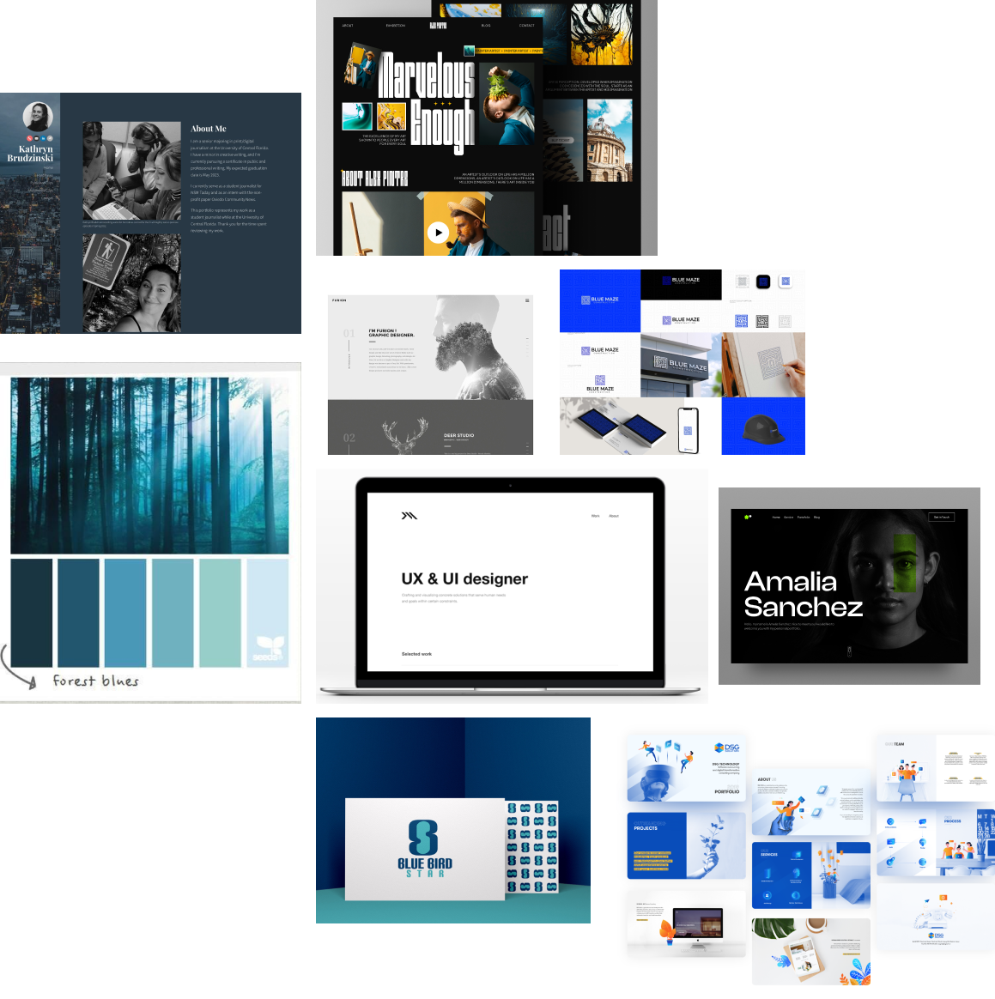
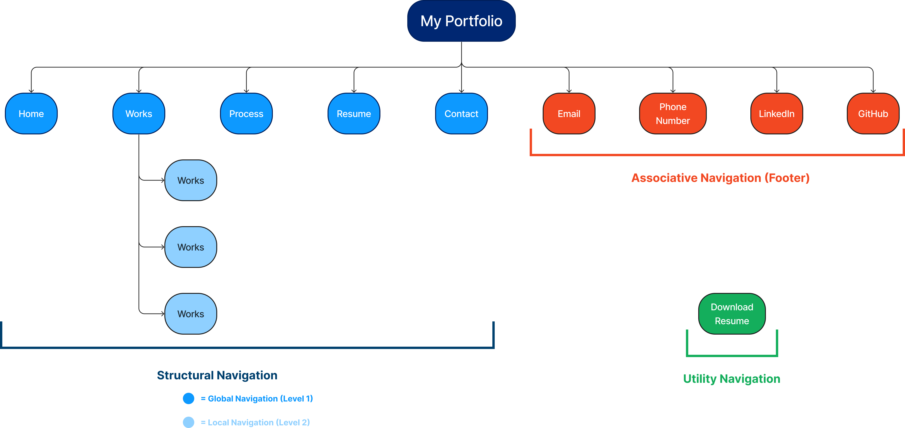
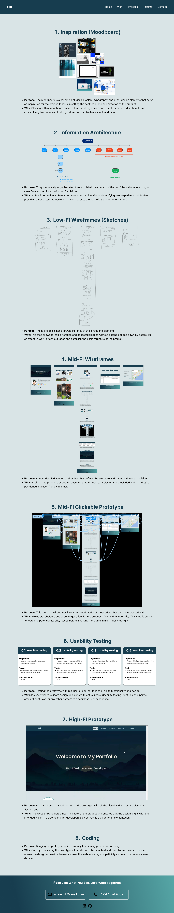
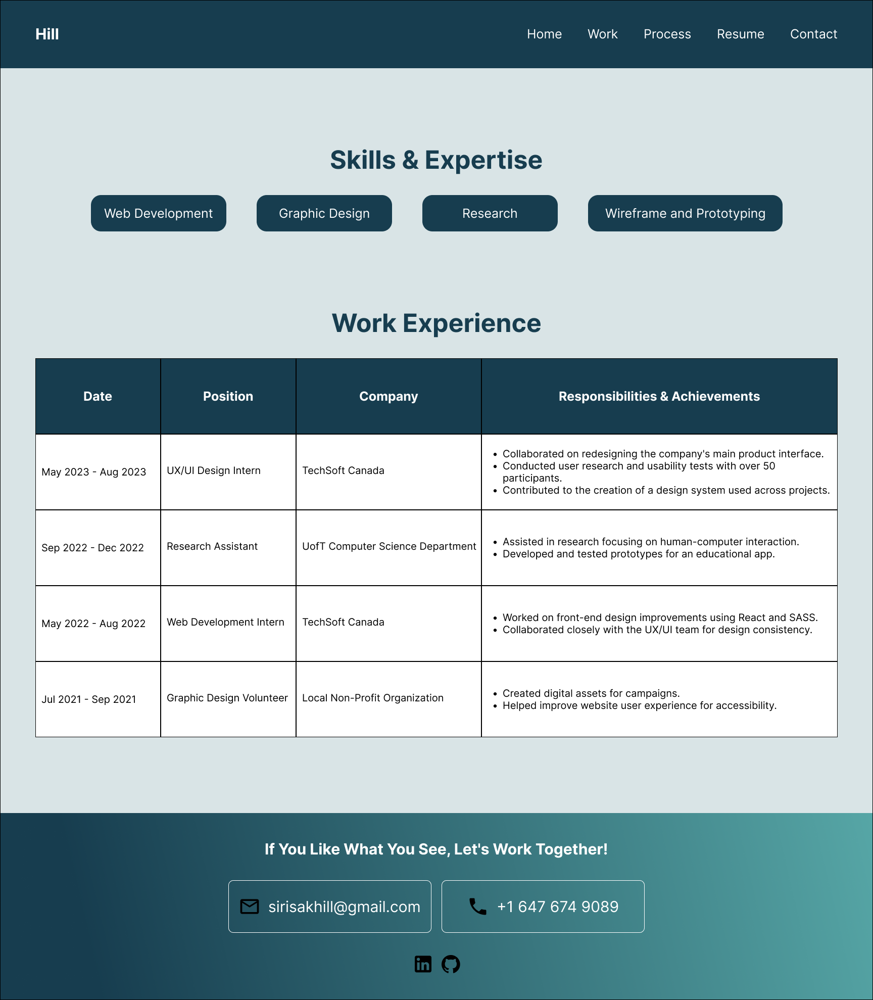
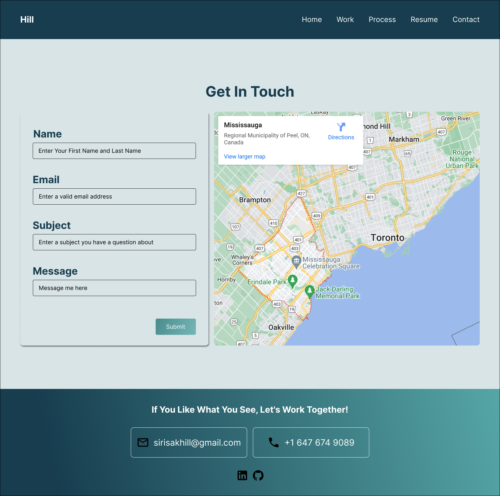
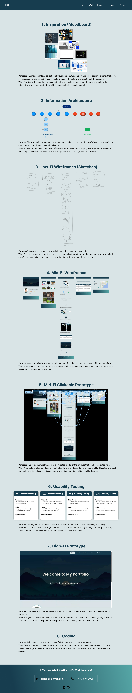
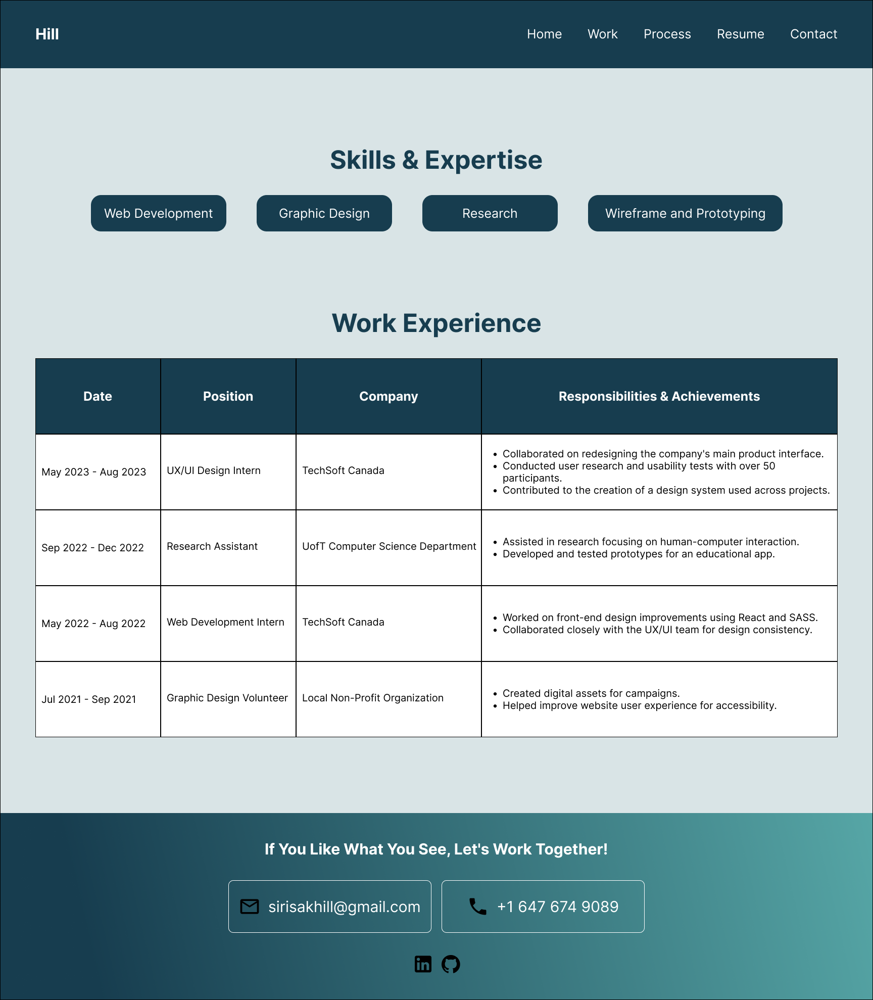
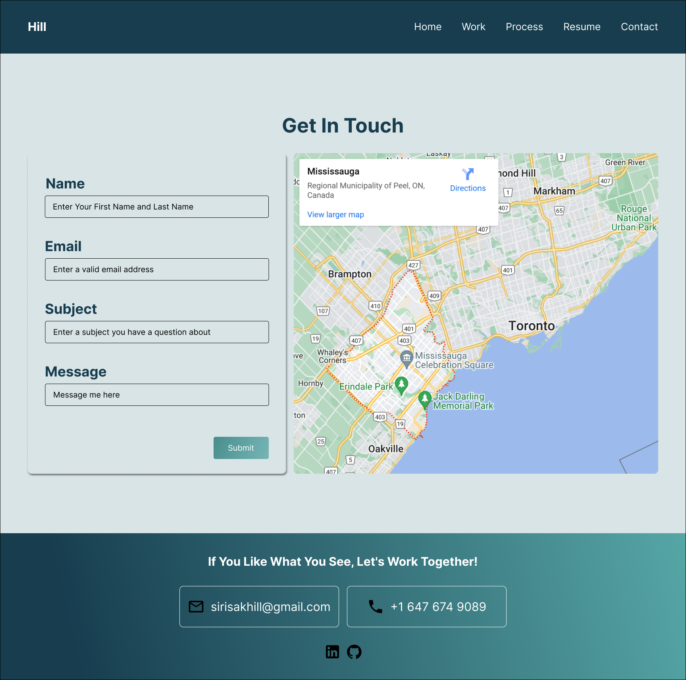
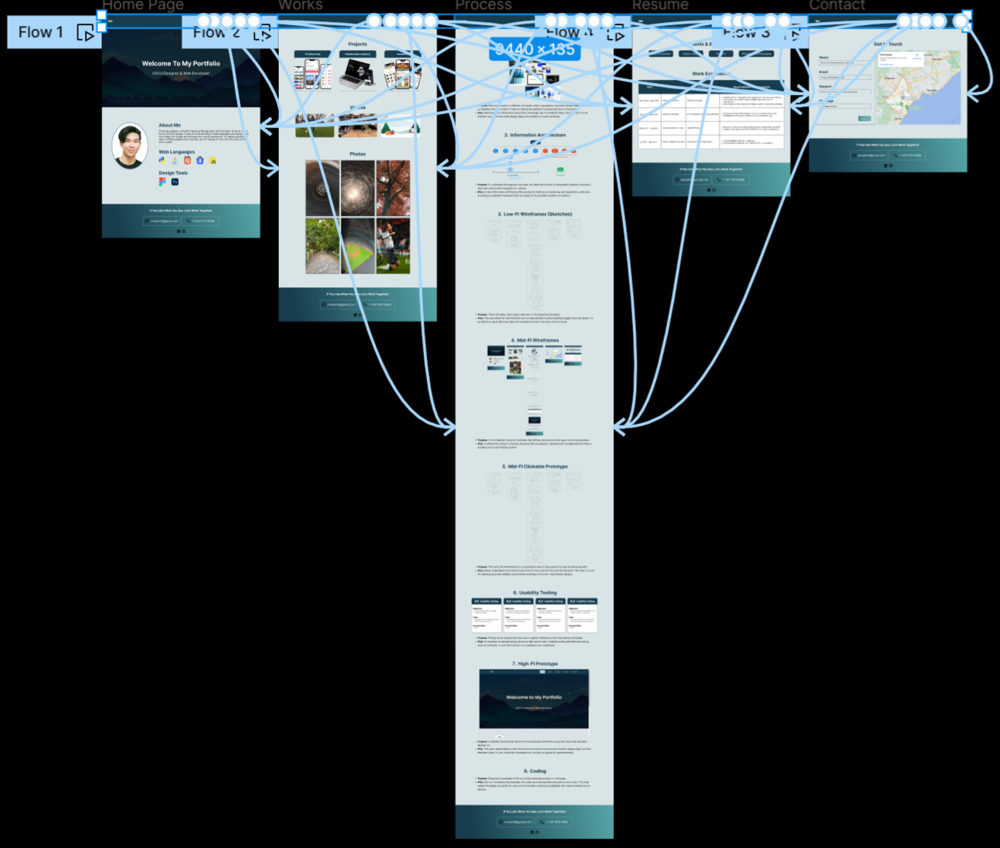

1. Inspiration (Moodboard)
Purpose: The moodboard is a collection of visuals, colors, typography, and other design elements that serve as inspiration for the project. It helps in setting the aesthetic tone and direction of the product.
Why: Starting with a moodboard ensures that the design has a consistent theme and direction. It's an efficient way to communicate design ideas and establish a visual foundation.
2. Information Architecture (IA)
Purpose: To systematically organize, structure, and label the content of the portfolio website, ensuring a clear flow and intuitive navigation for visitors.
Why: A clear information architecture (IA) ensures an intuitive and satisfying user experience, while also providing a consistent framework that can adapt to the portfolio's growth or evolution.
3. Low-FI Wireframes (Sketchs)
Purpose: These are basic, hand-drawn sketches of the layout and elements.
Why: This step allows for rapid iteration and conceptualization without getting bogged down by details. It's an effective way to flesh out ideas and establish the basic structure of the product.
4. Mid-FI Wireframes
 





Purpose: A more detailed version of sketches that defines the structure and layout with more precision.
Why: It refines the product’s structure, ensuring that all necessary elements are included and that they're positioned in a user-friendly manner.
5. Mid-FI Clickable Prototype
Purpose: This turns the wireframes into a simulated model of the product that can be interacted with.
Why: Allows stakeholders and users to get a feel for the product's flow and functionality. This step is crucial for catching potential usability issues before investing more time in high-fidelity designs.
6. Usability Testing
Purpose: Testing the prototype with real users to gather feedback on its functionality and design.
Why: It's essential to validate design decisions with actual users. Usability testing identifies pain points, areas of confusion, or any other barriers to a seamless user experience.
7. High-FI Prototype
Purpose: A detailed and polished version of the prototype with all the visual and interactive elements fleshed out.
Why: This gives stakeholders a near-final look at the product and ensures that the design aligns with the intended vision. It's also helpful for developers as it serves as a guide for implementation.
8. Coding
Purpose: Bringing the prototype to life as a fully functioning product or web page.
Why: Only by translating the prototype into code can it be launched and used by end-users. This step makes the design accessible to users across the web, ensuring compatibility and responsiveness across devices.